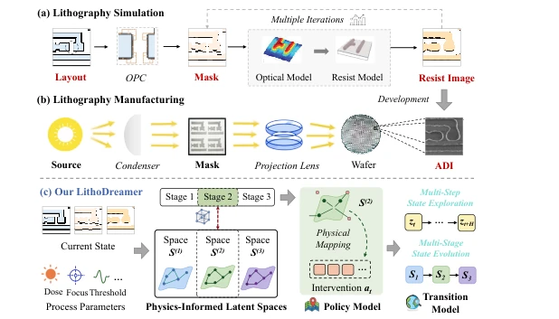
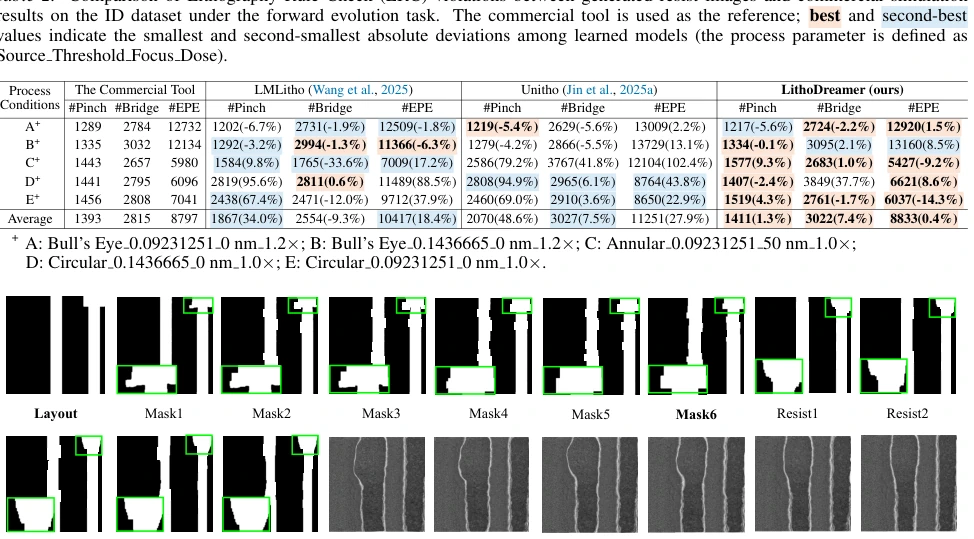
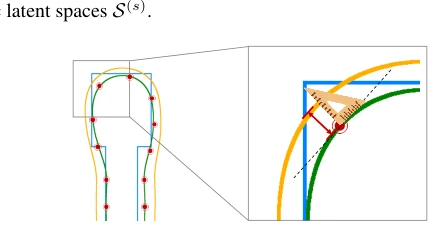
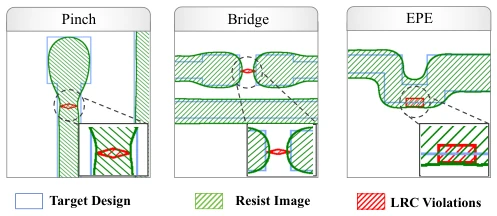
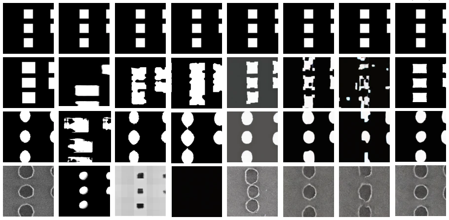
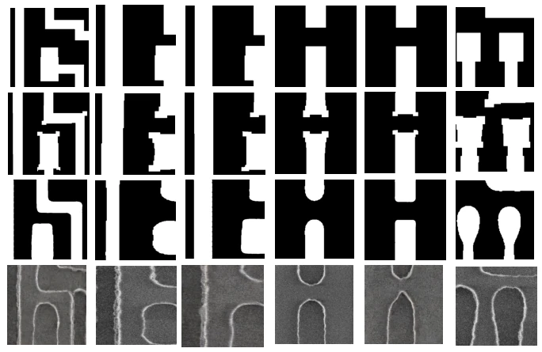
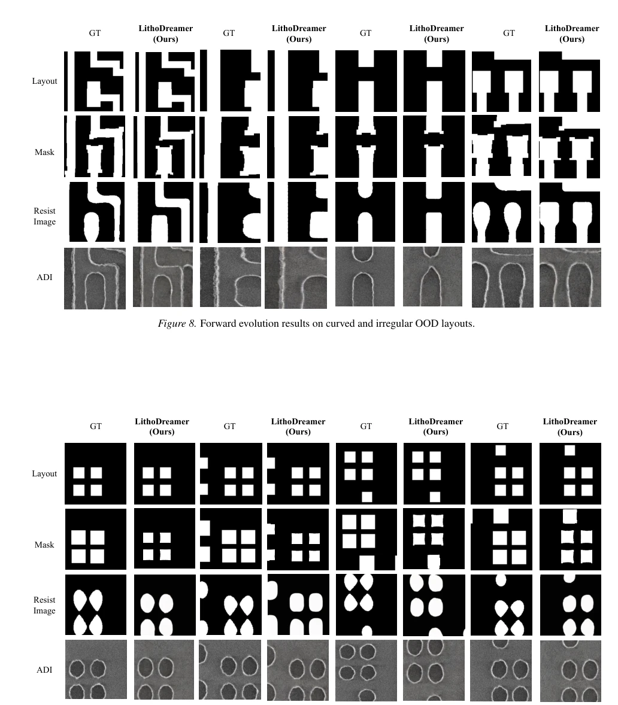
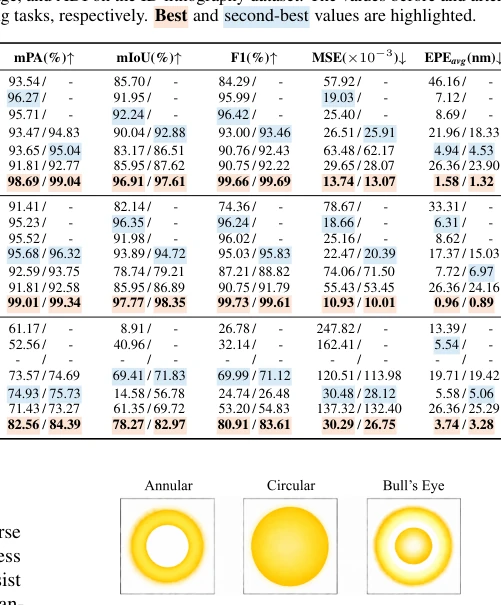

LithoDreamer 试图用 World Model 解决光刻问题，思路虽野但务实。把光刻流程视为决策驱动的多步演化，而非静态预测，这点比 Unitho 强。物理先验（SPA）加对比变分优化，强行把 WM 的“想象力”按在物理定律上，防止模型乱造图。不过，这模型对光刻工艺参数依赖极大，换个节点可能就得重训，泛化性虽比静态模型好，但离通用世界模型差得远。EPE 降到 1-4nm 确实牛，但工业界更关心 LRC 违规，表 2 显示它比商业工具略差一点点（平均偏差 1.3%），这点得诚实点。此外，它依赖大量工业数据训练，小厂可能玩不起。
LithoDreamer attempts to solve lithography problems using a World Model; the approach is bold yet pragmatic. Viewing the lithography process as a decision-driven multi-step evolution rather than static prediction is a strength compared to Unitho. Physical priors (SPA) combined with contrastive variational optimization forcibly constrain the WM's "imagination" to physical laws, preventing the model from generating hallucinations. However, this model relies heavily on lithography process parameters; switching nodes may require retraining. Although generalization is better than static models, it is far from a general-purpose world model. Reducing EPE to 1-4nm is indeed impressive, but the industry cares more about LRC violations. Table 2 shows it is slightly worse than commercial tools (average deviation 1.3%); this point requires honest acknowledgment. Additionally, it relies on large amounts of industrial data for training, which smaller manufacturers may find prohibitive.
研究动机Motivation
光刻是连续物理过程，涉及掩模、成像、光刻胶、显影。现有 OPC/ILT 依赖昂贵物理仿真，慢（Chen et al., 2025）。静态 ML 方法（如 Unitho, LMLitho）只能做点对点映射，无法建模连续干预下的状态演化（Jin et al., 2025a; Wang et al., 2025）。世界模型（WM）在自动驾驶中有效（Zhao et al., 2025），但直接套用到光刻面临多阶段物理性质差异大、干预信号未观测的问题。需要一种能理解物理约束的演化模型，填补静态预测与物理仿真之间的空白。
Lithography is a continuous physical process involving masks, imaging, photoresist, and development. Existing OPC/ILT relies on expensive physical simulation, which is slow (Chen et al., 2025). Static ML methods (e.g., Unitho, LMLitho) can only perform point-to-point mapping and cannot model state evolution under continuous intervention (Jin et al., 2025a; Wang et al., 2025). World Models (WM) are effective in autonomous driving (Zhao et al., 2025), but direct application to lithography faces issues of large differences in multi-stage physical properties and unobserved intervention signals. An evolution model capable of understanding physical constraints is needed to fill the gap between static prediction and physical simulation.

Figure 1. Comparison of the different processes: (a) Typical commercial simulation workflow; (b) Actual physical lithogra- phy manufacturing process; (c) The evolution workflow of our LithoDreamer’s process intervention and lithography state.
The framework consists of three steps: SPA constructs stage-specific physical latent spaces, Policy plans interventions, and Transition predicts states. SPA extracts latent space basis vectors through feature decomposition, constraining intervention directions to comply with physics. Policy uses ViT+MLP to output intervention distributions, with random sampling to increase exploration. Transition uses a DiT backbone with a stage-aware MLP head. The key innovation is Contrastive Variational Optimization, which uses only terminal state supervision, distinguishing matching/mismatching interventions through contrastive learning without intermediate intervention labels. State transitions use gradient gating to determine when to enter the next stage, avoiding error accumulation.
280k samples, 55nm production line. Tasks: forward evolution, inverse planning. Metrics: EPE is the most critical. EPE reaches 1.58nm on ID, with good generalization on OOD for 55nm and 28nm. Comparison baselines: LMLitho, Unitho, DINO-WM, DriveDreamer-2. LithoDreamer leads comprehensively. Ablation experiments prove SPA and contrastive learning are indispensable. LRC violation checks show proximity to commercial tools. Under OOD settings, EPE reduction is significant, proving its strong physical constraint generalization rather than rote memorization of data distribution.

Figure 4. Visualization of inverse planning on the ID dataset. Given the input layout and target ADI, LithoDreamer plans latent interventions and evolves the Mask, Resist Image, and ADI state to achieve the target pattern.

Figure 5. Schematic illustration of gauge-based EPE measurement. Local measurement gauges are placed on the target resist image contour, and edge displacement is evaluated along the corresponding contour-normal direction. The magnified view highlights how the measured offset captures local contour placement deviation between the generated and target resist image patterns.

Figure 6. Representative LRC violation categories used for manufacturability assessment. Pinch captures locally narrowed printed features, Bridge captures unintended connections or insufficient spacing between neighboring structures, and EPE captures excessive contour displacement beyond the allowed placement tolerance. Red markers indicate the detected violation regions.

Figure 7. Qualitative comparison of forward evolution results on OOD samples at the 55 nm process node.

Figure 8. Forward evolution results on curved and irregular OOD layouts.

Figure 9. Forward evolution results on isolated contact-like OOD layouts.
其他图片Other Figures

Figure 3. Three types of light sources in the dataset, each with configurable parameters, such as radius.